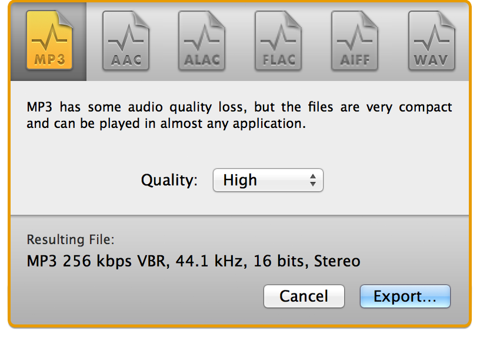

Audio Format Conversion
While originally designed for lossless audio editing, Fission can also save audio between formats in a process known as transcoding. For example, you can edit an AIFF file and save it to MP3, or take a collection of FLAC files and convert them to AAC. Fission offers two ways to convert formats: you can export a single file to a new format, or perform a batch conversion of many files at once.
Fission offers support for saving to MP3, AAC, Apple Lossless, FLAC, AIFF, and WAV, with defaults offering varying quality levels. Audio experts can even customize all settings using the Custom menu option. Remember that higher bitrates provide higher quality, but also create bigger files. For more details, see the Audio Formats Overview page.
Exporting
When you've got an audio file open, selecting Export from the file menu will bring up this sheet:

From this sheet, you can export a file to your desired format and Fission will save it out in seconds. You can also Export just a selection of a file, with the Export Selection option.
The Batch Converter
Fission's Batch Converter makes it easy to transcode multiple files at once. The Batch Converter can be opened from Fission's Start window, or by selecting Show Batch Converter from the Window menu.

In the Batch Converter window, you can add multiple files to the table at the top, then select the desired format and output location. Once that's set, clicking Convert will cause the files to be converted in sequence.